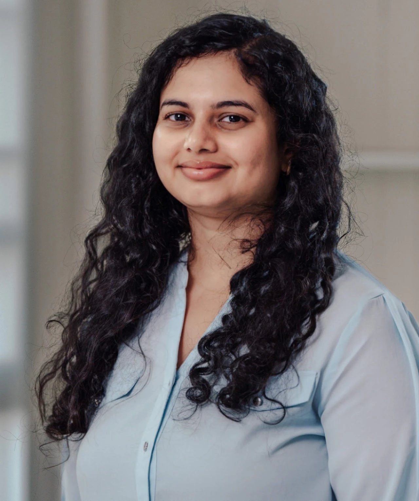
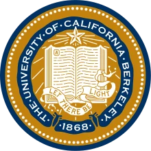
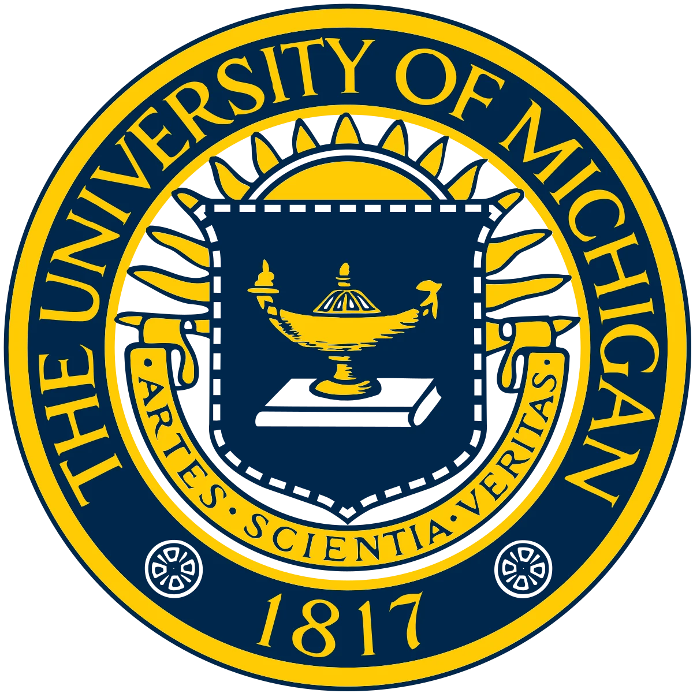
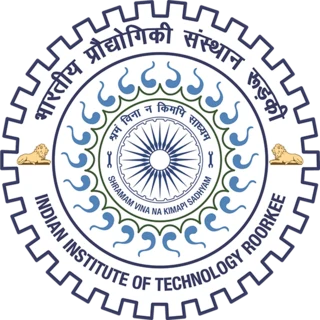

Continual learning for robots
Acquiring new skills while retaining what a robot has already learned.

University of California, Berkeley
Robotics · Learning · Control
PhD student in Mechanical Engineering
I am a PhD student at the University of California, Berkeley, developing safe motion planning and continual learning algorithms for highly dynamical robots at the ICON Lab, under the mentorship of Prof. Negar Mehr.
Previously, I earned my master’s degree in Robotics from the University of Michigan, Ann Arbor, where I worked on multi-terrain locomotion of bipedal robots with Prof. Jessy Grizzle in the Bipedal Locomotion Lab.
View my CVMy new paper, SAMBAR: Selective Anchoring via Method of Multipliers for Balanced Knowledge Acquisition and Retention in Vision-Language-Action Models, is available on arXiv.
My paper, Learning Control Policies to Provably Satisfy Hard Affine Constraints for Black-Box Hybrid Dynamical Systems, was accepted to the Conference on Decision and Control 2026.
I received the David & Patricia P. Bogy Fellowship from the Department of Mechanical Engineering, in recognition of a distinguished academic record and promise for continued noteworthy achievement.
I passed my preliminary examination in Controls.
I started my PhD in Mechanical Engineering at UC Berkeley, focusing on robotics under the supervision of Prof. Negar Mehr.
I combine machine learning and control to help robots learn and move safely in the world.
Acquiring new skills while retaining what a robot has already learned.
Safe motion planning and control for highly dynamical robotic systems.

PhD in Mechanical Engineering
2024 – present

Master of Science in Robotics
May 2024

Bachelor of Technology in Electrical Engineering
May 2019